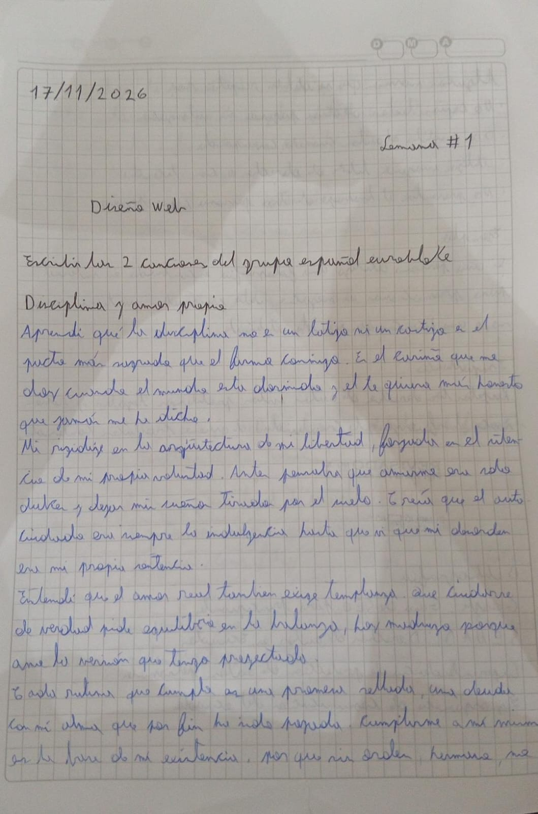
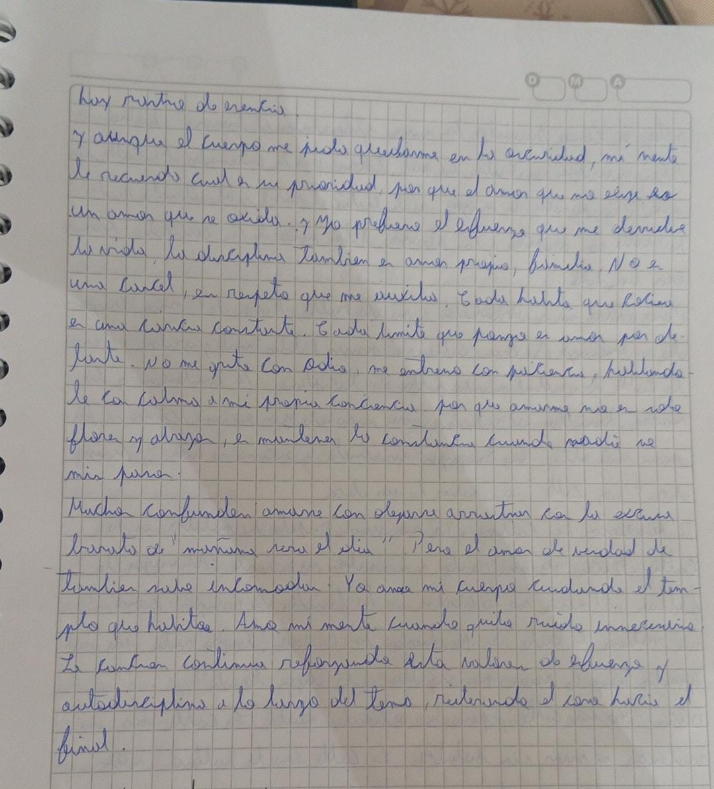
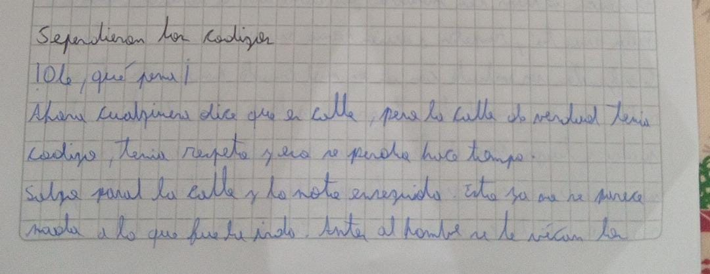
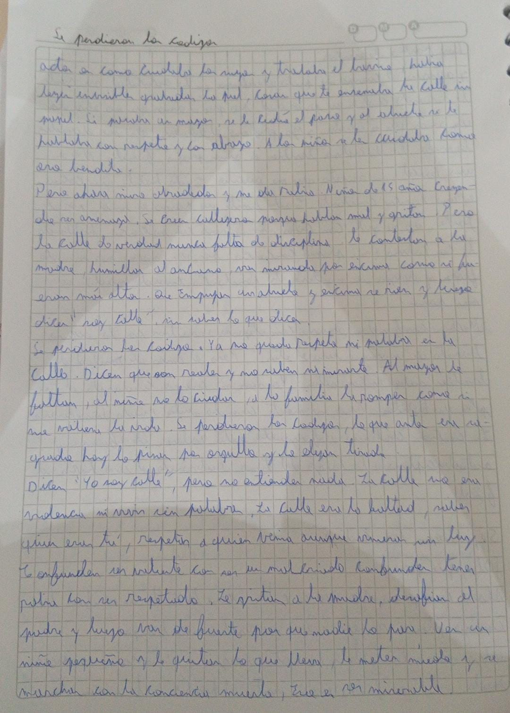
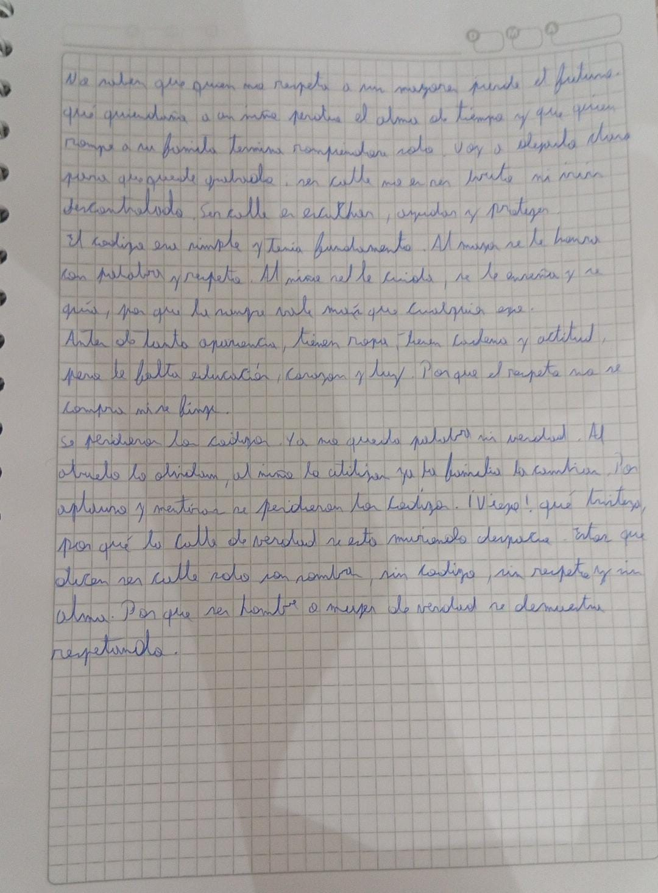

Disciplina y amor propio
Reflexión musical
Esta composición nos invita a pensar en la importancia de nuestras decisiones y en la forma en que enfrentamos los desafíos cotidianos. Nos enseña que tener confianza en nosotros mismos es un paso necesario para seguir adelante y alcanzar aquello que nos proponemos.
También resalta que las metas requieren dedicación y que cada pequeño avance cuenta. No siempre será fácil lograr lo que deseamos, pero mantener una actitud positiva y aprender de nuestros errores nos permite crecer y adquirir nuevas experiencias.
Lo que podemos aprender de esta canción es que nuestro progreso depende de la perseverancia, de la manera en que nos tratamos y de las ganas de seguir mejorando sin compararnos con los demás.
LETRA DE LA CANCIÓN


Se perdieron los códigos
Reflexión musical
Por medio de esta canción podemos analizar cómo han cambiado algunas formas de actuar dentro de la sociedad. Su contenido nos hace cuestionar si estamos dando la importancia necesaria a la honestidad, al respeto y a la responsabilidad.
Las relaciones con otras personas necesitan comprensión, confianza y sinceridad. Cuando estos aspectos no se toman en cuenta, pueden surgir conflictos y dificultades para entendernos. Por eso es importante pensar antes de actuar y reconocer cómo nuestras palabras pueden afectar a los demás.
El mensaje que interpretamos es que los buenos principios no deben quedar en el olvido. Practicar valores todos los días es una manera de aportar a una mejor comunidad y de demostrar que podemos convivir de forma más consciente.
LETRA DE LA CANCIÓN


